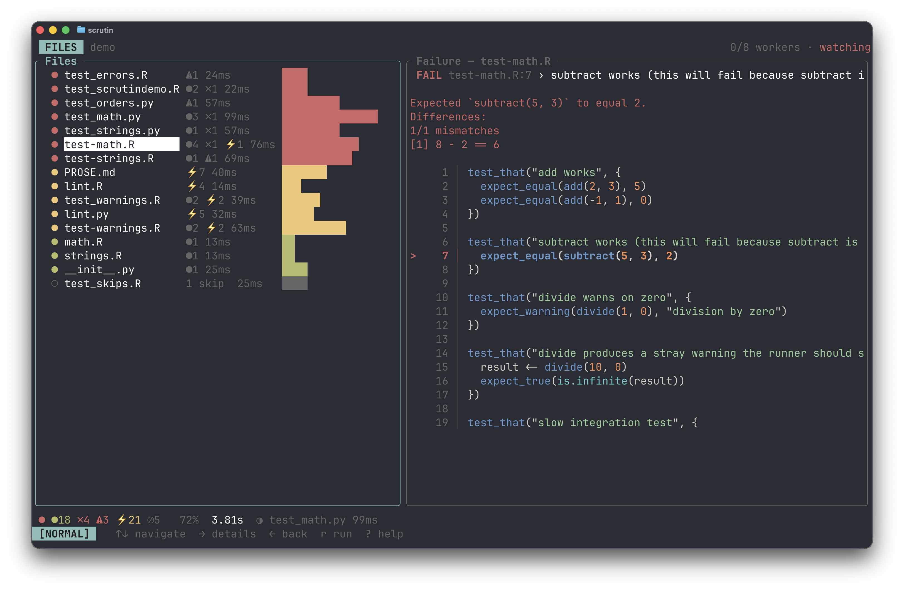

Getting Started¶
Alpha software
Scrutin is alpha software under active development. Expect bugs, breaking changes, and rough edges. Please report issues at github.com/vincentarelbundock/scrutin.
Install¶
Prebuilt binaries are published with each release.
First run¶
Scrutin can run in a terminal, as a web dashboard, or inside an editor like VS Code or RStudio using one of the official extensions. All of these frontends auto-detect your test framework, run every test file in parallel, and stream results as they arrive.
Users interested in a specific frontend should click the links above for setup details. In the simplest case, all you need to do is cd to the directory and run:

In the terminal UI:
- Each file is one row in the list; the counts bar at the bottom summarizes the run.
↑/↓move the cursor→drills into a file←goes backropens the run menux/Xcancels runsqquits?shows the full keymap- See Keybindings for a full list, including vim-style alternatives.
If no tests are detected, see Projects and Files for how detection works.
Configuration¶
Most projects need no config: auto-detection covers the common cases. When you do want to tune something (workers, timeouts, filters, per-tool options), generate a starter file at the project root:
That writes .scrutin/config.toml with commented-out defaults. The full set of knobs is in the configuration reference.
External tools¶
Test frameworks auto-detect; linters and spell-checkers are opt-in so a stray .py file in an R project doesn't suddenly start failing on style. Declare the tools you want via [[suite]] entries in .scrutin/config.toml:
See each tool's page for details: jarl, ruff, skyspell, typos.
Requirements¶
Scrutin orchestrates third-party tools but doesn't ship them. Install the ones your project uses through their usual channels:
- Test and data-validation tools (testthat, tinytest, pointblank, validate, pytest, Great Expectations) run inside an R or Python interpreter. Install them as importable packages in the environment Scrutin uses for that suite (the active R library, or the suite's resolved Python virtualenv).
- Linters and spell-checkers (jarl, ruff, skyspell, typos) are standalone binaries. Put them on
PATH.
At startup Scrutin checks that every required binary is reachable and refuses to run a suite whose binary is missing, with a pointer to the tool's homepage. Set [preflight] command_tools = false to bypass the check.